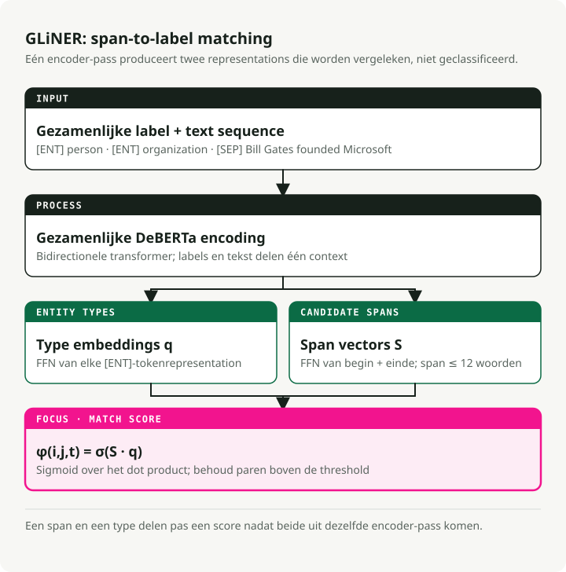
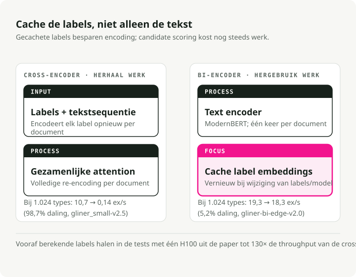
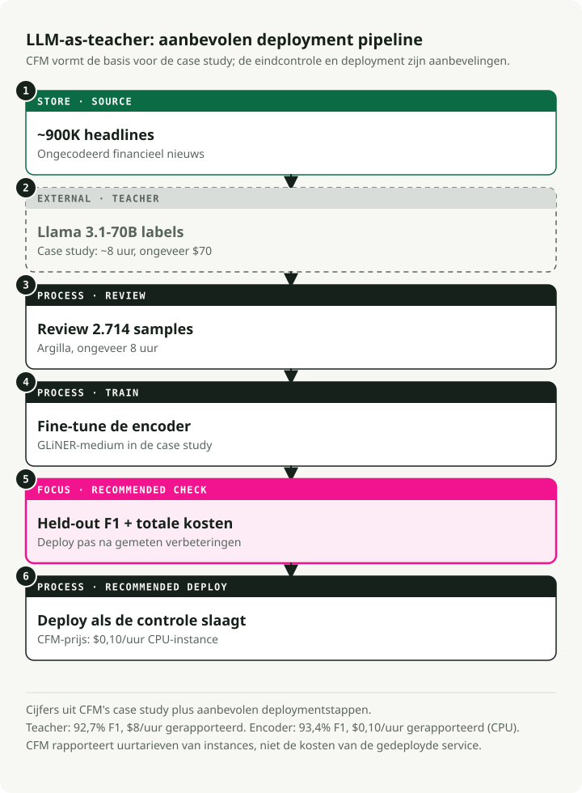
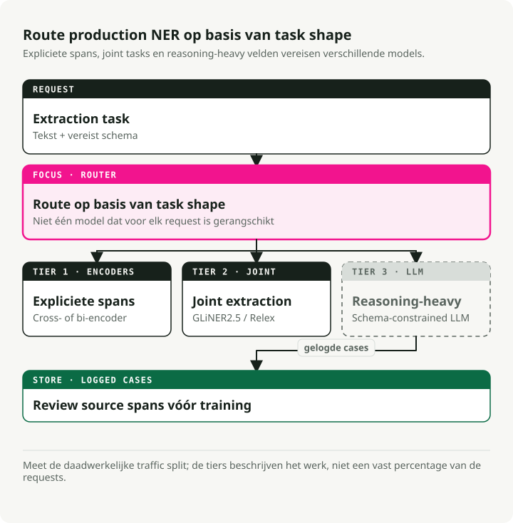

Automatische vertaling
Dit artikel is automatisch vertaald vanuit de oorspronkelijke Engelse versie.
Het definitieve handboek over NER in 2026: Encoders, LLM’s en de 3-lagen productiearchitectuur
Twee jaar geleden betekende het kiezen voor een NER-aanpak dat men moest kiezen tussen snelheid (encodermodellen) en nauwkeurigheid (LLM’s). Die afweging bestaat niet langer. Een GLiNER-model met 300 miljoen parameters bereikt dezelfde nauwkeurigheid als een 13B UniNER-model bij zero-shot gebruik, terwijl het 100 keer sneller draait. Een nieuwere variant van bi-encoders kan worden aangepast aan miljoenen entiteittypen en biedt een 130 keer grotere doorvoersnelheid vergeleken met de oorspronkelijke cross-encoder. Het dominante productiemodel dat hieruit is ontstaan is het volgende: gebruik LLM’s om gegevens te labelen, finetunen compacte encoders, en deze vervolgens implementeren met ONNX of Rust.
Ik heb het bijbehorende repository opgebouwd en elke belangrijke benadering getest. Encoders hebben de markt voor productieniveau NER veroverd. LLM’s blijven essentieel, maar dan als generator van trainingsgegevens in plaats van als inferentie-engineën. Dit handboek behandelt de artikelen, benchmarks en implementatiepatronen achter deze verschuiving.
Bijbehorend repository: ner-veldgids — uitvoerbare demonstraties voor GLiNER, export naar ONNX, het LLM-as-teacher-pipeline, en gestructureerde extractie met Instructor.
Kort samengevat: je hoeft geen NER-modellen meer vanaf nul te bouwen. Voor zero-shot extractie presteert GLiNER op CPU via ONNX zelfs beter dan de nieuwste LLM’s, met bijna nul extra kosten. Voor domeinspecifieke taken levert het LLM-as-teacher-pipeline (LLM-labels → review → fine-tuning) encoders op die een F1-score van 90-93%+ behalen. Voor gevallen waarin redenering nodig is, kun je Instructor of Outlines gebruiken in combinatie met een LLM-API — maar reken op een kostenpost van ongeveer $2 per 1.000 documenten. De drie-laagsarchitectuur combineert al deze benaderingen.
NER betekent nog steeds hetzelfde: het identificeren van genoemde segmenten in tekst en het classificeren daarvan. Wat wel is veranderd, is waar het wordt toegepast. Vroeger was het de laatste stap in een NLP-pijplijn, een onopvallende hulpprogramma die nooit het onderwerp van blogs was. Tegenwoordig vormt het een essentieel onderdeel van RAG-systemen, agentloopen en platforms voor documentverwerking. Daarom is de golf aan NER-onderzoek van 2024 tot 2026 belangrijk, zelfs buiten academische benchmarks om.
RAG: Betere resultaten door entiteitsextractie
Standaard RAG – tekst in delen opdelen, embedden, op basis van gelijkenis zoeken en hopen op het beste resultaat – werkt niet meer wanneer gebruikers vragen stellen over specifieke entiteiten. Als iemand vraagt: "Wat zei Anthropic over de veiligheid van modellen in het vierde kwartaal van 2024?", moet het systeem "Anthropic" en "Q4 2024" herkennen als filters, in plaats van alleen te vertrouwen op embedding-overeenkomsten.
Tijdens het indexeren haalt u entiteiten uit elk fragment en slaat u deze op als metadata: {"organizations": ["Anthropic"], "dates": ["Q4 2024"], ...}. Hiermee kunt u eerst filteren op entiteiten voordat u een vectorzoekopdracht uitvoert. Knowledge graph RAG (GraphRAG, LlamaIndex property graphs) gaat nog een stap verder: NER gecombineerd met relatie-extractie creëert een graf dat in staat is om meervoudige vragen te beantwoorden die platte embeddings niet kunnen oplossen.
Tijdens het zoeken, zorgen de uit de vraag van de gebruiker geëxtraheerde entiteiten voor de juiste route. Een vraag waarin een bedrijfsnaam wordt genoemd, wordt doorgestuurd naar een financiële index; een vraag met geneesmiddelennamen leidt naar een klinische kennisbasis. GLiNER werkt hier goed omdat de zoekentiteiten onvoorspelbaar zijn — er is geen mogelijkheid om opnieuw te trainen voor elk nieuw entiteittype dat gebruikers mogelijk gaan vragen.
AI Agents: Tekst omzetten in gestructureerde feiten
Agents ontvangen ongestructureerde tekst — webpagina’s, API-responsen, gebruikersberichten — en moeten hierop handelen. NER zet deze tekst om in gestructureerde feiten die de agent kan verwerken, opslaan of doorgeven aan tools.
Er zijn twee gebieden waar dit het belangrijkst is.
Het eerste is de routering van tools. Wanneer een gebruiker zegt “plan een vergadering met Sarah Chen van Accenture op donderdag om 14.00 uur”, moet de agent de benodigde gegevens extraheren. PERSON: Sarah Chen, ORGANIZATION: Accenture, en DATETIME: Thursday 2pm vóór het oproepen van de kalender-API. Een encoder-NER-model doet dit in minder dan 10 ms. Een LLM voegt 1-2 seconden toe per oproep, en die vertraging stapelt zich op in meerdere stappen tellende workflows, totdat een ‘instantane’ agent niet langer instantané aanvoelt.
Het tweede aspect is entiteitenvolgen over gesprekken heen. Agentgeheugensystemen moeten weten dat ‘Sarah’ in stap 3 en ‘Ms. Chen’ in stap 12 dezelfde persoon zijn. NER identificeert de relevante tekstsegmenten; entiteitenlinking koppelt deze segmenten aan dezelfde ID.
In beide gevallen is de beperking de vertraging. Een NER-oproep van 200 ms binnen een keten van 10 stappen zorgt voor een gevoelde vertraging van 2 seconden. Daarom zijn encoder-modellen, in plaats van extractie gebaseerd op LLM’s, de juiste keuze voor het verwerken van entiteiten binnen agentcycli.
Documentintelligentie: van afbeeldingen naar gestructureerde data
OCR zet afbeeldingen om in tekst. NER zet tekst om in gestructureerde velden. Samen zorgen ze voor schaalbare digitalisering van documenten.
De standaardpijpleiding: voer OCR uit (Tesseract, Azure Document Intelligence, AWS Textract) om tekst en binnenschakelingsboxen te verkrijgen, en voer vervolgens NER uit om gestructureerde velden te extraheren — invoice_number, vendor_name, line_items, total, due_date — afkomstig van een JPEG van een papieren factuur. Dezelfde aanpak werkt voor contracten, medische dossiers en regelgevende documenten.
Moderne platforms combineren drie stappen: layoutbegrip (is dit een kop of een tabelcel?), entiteitsextractie (wat voor type tekst is dit?) en relatie-extractie (welke waarden horen bij elkaar?). GLiNER 2 behandelt al deze stappen in één enkele verwerkingsslag; één enkele oproep van het model kan de resultaten teruggeven {vendor: "Acme Corp", amount: "\$4,200", due_date: "2026-04-15"} uit een factuur.
Dit is waar de kosten een rol spelen. Een middelgrote accountantskantoor verwerkt maandelijks tientallen duizenden facturen. Het doorsturen van elke factuur via een LLM – zelfs een kostenefficiënt model als GPT-5.4 Nano – kost honderden dollars per dag. Een goed afgestemd GLiNER op CPU kost daarentegen slechts enkele centen. Uw CFO zal het verschil zeker opmerken. De route: 500 voorbeeldfacturen annoteren met een LLM, GLiNER finetunen op de resultaten, en dit op een CPU implementeren tegen een kostenprijs van $0,10/uur.
PII-detectie en beperkende maatregelen voor LLM’s
Privaciewetten (GDPR, HIPAA, CCPA) vereisen dat persoonlijke gegevens worden opgespoord voordat ze bij downstream-systemen terechtkomen. Voor implementaties van LLM’s betekent dit dat invoer moet worden gescand voordat deze het model bereikt, en uitvoer voordat deze de gebruiker bereikt.
NER behandelt dit rechtstreeks. Modellen voor de-desidentificatie vinden PERSON, SSN, PHONE, EMAIL, ADDRESS Spannen moeten worden verwijderd of vervangen door valse equivalenten. De klinische modellen van John Snow Labs Het bereikt een 96% F1-score bij het detecteren van PHI (vergeleken met 91% voor Azure, 83% voor AWS en 79% voor GPT-4o), terwijl er dagelijks meer dan 100.000 klinische notities worden verwerkt.
Voor beveiligingsmaatregelen rondom LLM’s fungeert NER als een voorsorteerlaag: het scant gebruikersinvoer op PII voordat deze naar een externe API wordt gestuurd, waarna deze kan worden geblokkeerd of geanonimiseerd. Dit is sneller en eenvoudiger dan de LLM te vragen om zichzelf te modereren. GLiNER is hierbij bijzonder nuttig, omdat de categorieën PII per rechtsgebied verschillen. Je kunt nieuwe entiteittypen, zoals “genetische informatie”, toevoegen onder een nieuwe regelgeving zonder opnieuw te trainen.
GLiNER herschrijft de economie van NER met een model van 300 miljoen parameters
GLiNER (NAACL 2024, Zaratiana et al.) maakte encoder gebaseerde NER-concepten concurrerend met LLM’s, tegen een aanzienlijk lagere kostenpost. In plaats van NER te behandelen als sequentiële labeling of tekstgeneratie, ziet GLiNER dit als een matching-probleem: elke mogelijke tekstspan (elke opeenvolgende reeks woorden zoals “Bill Gates” of “Microsoft”) wordt vergeleken met elk entiteittypplabel, waarbij alleen de hoogst gescorede paren worden behouden.
Het model gebruikt de entiteittype-etiketten en de invoertekst als één enkele sequentie: [ENT] person [ENT] organization [ENT] date [SEP] Bill Gates founded Microsoft.... Een bidirectionele transformer (DeBERTa-v3) encodeert alles samen.
Uit de uitvoer genereert het model twee sets representaties: één voor entiteittypen (uit [ENT] de posities van tokens) en één voor tekstspannen (door de start- en eindtokenvectoren te combineren met een klein FFN). Een dotproduct tussen de representatie van een span en de representatie van een entiteitentype levert een score op.
Door de sigmoid-functie toe te passen, verkrijg je de waarschijnlijkheid dat het span van token \(i\) tot token \(j\) behoort tot entiteitentype \(t\): \(\phi(i, j, t) = \sigma(S_{ij}^T \cdot q_t)\), waarbij \(S_{ij}\) de spanvector is die wordt geproduceerd door het FFN en \(q_t\) de entiteitentype-embedding is uit de overeenkomstige [ENT] token (Zaratiana e.a., 2024, Eq. 1). De lengte van de spans wordt begrensd op 12 tokens om de snelheid te behouden.

In de praktijk betekent dit dat elke beschrijving in natuurlijke taal kan dienen als label tijdens het inferentieproces. Er is geen hertraining nodig. Je geeft gewoon aan welke entiteittypen je wilt gebruiken (“persoon”, “nadelige medicijnreactie”, “financieel instrument”), en het model evalueert de spannen tegen deze typen. Er zijn drie varianten beschikbaar: GLiNER-S (50 miljoen parameters), GLiNER-M (90 miljoen) en GLiNER-L (300 miljoen). De trainingsgegevens komen uit het Pile-NER-dataset: 44.889 teksten met 240.000 entiteitsspannen onderverdeeld in 13.000 entiteittypen, allemaal gelabeld door ChatGPT. Het trainen van GLiNER-L duurt ongeveer 4 uur op één A100-machine.Zaratiana e.a., 2024). Zaratiana e.a. (2024), Tabel 1 en 2:
| Model | Parameters | CrossNER F1-score | Gemiddelde (20 datasetten) |
|---|---|---|---|
| GLiNER-L | 300 miljoen | 60.9% | 47.8% |
| GoLLIE | 7B | 58.0% | -- |
| UniNER-13B | 13B | 55.6% | -- |
| GLiNER-M | 90 miljoen | 55.4% | -- |
| UniNER-7B | 7B | 53.7% | 45.7% |
| GLiNER-S | 50 miljoen | 52.7% | -- |
| ChatGPT (GPT-3.5) | -- | 47.5% | 36.5% |
GLiNER-M met 90 miljoen parameters komt bijna overeen met UniNER-13B (55,4% versus 55,6% F1), ondanks dat het 140 keer kleiner is. Zelfs de compacte versie GLiNER-S met 50 miljoen parameters doet het 5 punten beter dan ChatGPT (GPT-3.5) op het gebied van F1-scores. De multilinguele variant – die uitsluitend op Engelse gegevens is getraind – overtreft ChatGPT in 8 van de 10 niet-Engelse talen.Zaratiana e.a., 2024). Opmerking: nieuwere LLM’s (GPT-5.4, Claude 4.6) scoren waarschijnlijk hoger op deze benchmarks, maar het prijsverschil is alleen maar toegenomen — deze modellen zijn nog steeds een groot aantal ordes duurder dan een 90M-encoder op CPU.
Het ecosysteem is uitgebreid: meer dan 280 GLiNER-compatibele modellen op HuggingFace, ongeveer 350.000 downloads van PyPI per maand, en ongeveer 2.800 GitHub sterren. De verschillende varianten zijn geschikt voor biomedisch tekst, PII-detectie, nieuws en multilinguaal gebruik. quickstart.py:
from gliner import GLiNER
model = GLiNER.from_pretrained("urchade/gliner_medium-v2.1")
text = "Bill Gates founded Microsoft on April 4, 1975."
labels = ["person", "organization", "date"]
entities = model.predict_entities(text, labels, threshold=0.5)
for entity in entities:
print(f" {entity['text']} => {entity['label']} ({entity['score']:.3f})")
# Bill Gates => person (0.987)
# Microsoft => organization (0.991)
# April 4, 1975 => date (0.974)
Hoe GLiNER zich verhoudt tot spaCy
Elke gids over NER zou onvolledig zijn zonder spaCy — Ongeveer 21 miljoen downloads per maanden een van de meest betrouwbare NLP-bibliotheken in productieomgevingen. Echter lost het een ander probleem op dan GLiNER.
De pipelines van spaCy (en_core_web_sm, en_core_web_trf) uitvoeren van closed-vocabulary NER: een vaste set entiteittypen (PERSON, ORG, GPE, DATE, etc.) die tijdens het trainen worden gedefinieerd. Wil je een nieuw entiteittype? Verzamel gelabelde gegevens en train opnieuw. Dit wordt ondersteund door transformers. en_core_web_trf aanvallen 89,8% F1-score op OntoNotes 5.0, maar alleen voor zijn 18 vooraf gedefinieerde typen.
GLiNER ondersteunt open-vocabulary NER: elke label kan tijdens de inferentie worden gebruikt, zonder dat er opnieuw getraind hoeft te worden. Dit maakt het de betere keuze wanneer entiteittypen van tevoren onbekend zijn, vaak veranderen of specifiek zijn voor een bepaald domein (“adversieve geneesmiddelreactie”, “financieel instrument”, “dreigingsindicator”).
Mijn aanbeveling: gebruik spaCy voor standaard entiteittypen, waarbij de vooraf getrainde pipelines goed gevalideerd zijn. Gebruik GLiNER wanneer je flexibele, zero-shot typen nodig hebt of wanneer je pipeline zich moet aanpassen zonder opnieuw getraind te worden. Ze werken goed samen — spaCy zorgt voor tokenisatie en zinsverdeling, terwijl GLiNER de entiteitenextractie uitvoert.
UniNER en NuNER: Hoe klein kan het gaan?
UniNER (ICLR 2024, Zhou et al.) en NuNER (EMNLP 2024, Bogdanov et al.) reduceren beide annotaties van LLM’s tot kleinere NER-modellen — maar ze verschillen van mening over hoe klein dit kan zijn.
UniNER: De maximalistische benadering
UniNER past LLaMA-7B/13B aan met behulp van 44.889 NER-paren (240K entiteiten, 13K typen) die zijn gegenereerd door ChatGPT. Voor elk entiteitentype geeft het model antwoord op de vraag “Wat beschrijft [type] in de tekst?” en genereert het JSON-lijsten. Een belangrijk trainingstruc is frequentiegebaseerd negatief sampling, waardoor de F1-score stijgt van 31,5% naar 53,4%.Zhou et al., 2024).Zhou et al., 2024).
NuNER: De minimalistische aanpak
NuNER vertrekt vanaf RoBERTa-base (125 miljoen parameters) en maakt gebruik van contrastief trainen met 4,38 miljoen annotaties van GPT-3.5 voor 200.000 concepten — de totale kosten voor annotaties bedragen minder dan $500. Na het trainen wordt de conceptencoder weggegooid; de tekstencoder kan als vervanging voor RoBERTa worden ingezet in elke standaard NER-pijplijn.Bogdanov e.a., 2024).Bogdanov e.a., 2024).
Beide artikelen tonen hetzelfde resultaat: het samenvatten van annotaties van LLM’s in kleinere modellen leidt tot NER-resultaten die beter zijn dan die van de oorspronkelijke model. En je hebt geen 7 miljard parameters nodig — 125 miljoen is voldoende wanneer er gefineerde trainingsgegevens beschikbaar zijn, met MIT-licentie en inferentie die geschikt is voor CPU’s.
GLiNER 2: Eén model, vier taken
Het oorspronkelijke GLiNER-ecosysteem kende een steeds groter wordend probleem: aparte modellen voor NER (GLiNER), relatie-extractie (GLiREL), classificatie (GLiClass) en documentniveau REL (GLiDRE) — elk vereiste zijn eigen implementatie, Docker-container, monitoring en manieren om fouten aan te pakken. GLiNER 2 (EMNLP 2025, Zaratiana et al.) combineert deze vier functies in één enkel model met 205 miljoen parameters en een door schema’s gedreven interface.
De architectuur behoudt het cross-encoderontwerp, maar breidt de contextuitbreiding uit tot 2.048 tokens (4 keer zoveel als voorheen) en voegt declaratieve schema’s toe om extractietaken te definiëren. Voor de training worden 135.698 echte documenten gebruikt die zijn geannoteerd met GPT-4o, samen met 118.636 synthetische voorbeelden.Zaratiana e.a., 2025).Zaratiana e.a., 2025).
from gliner2 import GLiNER2
extractor = GLiNER2.from_pretrained("fastino/gliner2-base-v1")
# Multi-task composition in ONE forward pass
schema = (extractor.create_schema()
.entities({"person": "Names of people", "company": "Organization names"})
.classification("sentiment", ["positive", "negative", "neutral"])
.relations(["works_for", "founded", "located_in"])
.structure("product_info")
.field("name", dtype="str")
.field("price", dtype="str"))
results = extractor.extract(text, schema)
Eén modelimplementatie vervangt vier. Eenvoudigere infrastructuur en concurrerende nauwkeurigheid.
De Bi-Encoder: Schalen naar NER met miljoenen labels
Het oorspronkelijke GLiNER encodeert labels en tekst samen — wat een bottleneck veroorzaakt. Meer entiteittypen betekent een langere invoerserie, waardoor de prestaties snel afnemen bij meer dan ongeveer 30 typen. De GLiNER bi-encoder (februari 2026, Stepanov et al.; arXiv 2602.18487) lost dit op door de encoding van tekst en labels op te delen in twee aparte transformers.

De tekstencoder maakt gebruik van ModernBERT (Ettin-familie), terwijl de labelencoder sentence transformers gebruikt (BGE of MiniLM). Spans en labels worden gewaardeerd via een dotproduct. Het voordeel is dat embeddings voor entiteittypen één keer kunnen worden voorgerekend en opgeslagen. Tijdens inferentie hoeft alleen de tekst te worden gecodeerd — het opzoeken van labels gebeurt dan onmiddellijk.
Er zijn vier modelgroottes beschikbaar, die allemaal zijn getest op CrossNER.Stepanov e.a., 2026Tabellen 1):
| Model | Parameters | CrossNER F1-score | Doorvoer (H100) | Met vooraf berekende labels |
|---|---|---|---|---|
| bi-edge-v2.0 | 60 miljoen | 54.0% | 13,64 ex/s | 24,62 ex/s |
| bi-small-v2.0 | 108 miljoen | 57.2% | 7,99 ex/s | 15,22 ex/s |
| bi-base-v2.0 | 194 miljoen | 60.3% | 5,91 ex/s | 9,51 ex/s |
| bi-large-v2.0 | 530 miljoen | 61.5% | 2,68 ex/s | 3,60 ex/s |
Bij 1.024 entiteittypen verliest de bi-encoder (edge, vooraf berekend) slechts 5,2% van de doorvoersnelheid vergeleken met één enkele label. De cross-encoder verliest daarentegen 98,7% (van 10,7 naar 0,14 ex/s). Dat betekent een 130x groter voordeel in doorvoersnelheid op grote schaal. Met 100 entiteittypen op één H100 kan de bi-encoder 1,96 miljoen voorspellingen per dag verwerken, terwijl de cross-encoder er slechts 368K kan verwerken.Stepanov e.a., 2026).Stepanov e.a., 2026).
from gliner import GLiNER
model = GLiNER.from_pretrained("knowledgator/gliner-bi-base-v2.0")
# Pre-compute embeddings for massive label sets — encode once, use forever
entity_types = ["person", "organization", "date"] # Can be thousands or millions
entity_embeddings = model.encode_labels(entity_types, batch_size=8)
# Inference only encodes text — labels are a cached lookup
outputs = model.batch_predict_with_embeds(texts, entity_embeddings, entity_types)
Toepassingen omvatten biomedische NER tegen de UMLS-ontologie (4 miljoen+ concepten), bedrijfsgerichte taxonomieën die zich kunnen ontwikkelen zonder hertrainen van het model, en entiteitenlinking via het bijbehorende systeem. GLiNKER framework.
LLM’s als docenten: De $70-pijpleiding die beter presteert dan het model van $8 per uur
Het LLM-as-teacher-patroon is uitgegroeid tot een standaard productiepijpleiding. Drie onderzoeken tonen aan wat de kosten zijn en wat je ermee kunt bereiken.

Het CFM-casestudy
Capital Fund Management haalde bedrijfsnamen uit ongeveer 900.000 koppen financiële nieuwsberichten. Zero-shot GLiNER behaalde een 87,0% F1-score. Zij maakten gebruik van Llama 3.1-70b (het sterkste openbare model op dat moment) om het volledige dataset in ongeveer 8 uur te annoteren voor ongeveer $70, waarna 2.714 monsters nogmaals door mensen werden gecontroleerd met Argilla in nog eens 8 uur.
Het fijnafstellen van GLiNER op deze gegevens bracht de prestaties op 93,4% F1 — dit overtrof zelfs de 92,7% van het referentiemodel Llama 70b. Het gefineerde model draait voor $0,10 per uur op een CPU, vergeleken met $8 per uur voor het referentiemodel — dat is 80 keer goedkoper met een hogere nauwkeurigheid.CFM Casestudy). Vandaag kun je zelfs nog betere docentannotaties verkrijgen met Llama 4 Maverick of GPT-5.4 Mini tegen een vergelijkbare of lagere prijs.
Het Refuel AI-onderzoek
Refuel AI heeft de labelwerkzaamheid van LLM’s getest op 8 NLP-datasets, waaronder CoNLL-2003. GPT-4 (maart 2023) behaalde een 88,4% overeenstemming met de referentiewaarden — hoger dan de 86,2% van gekwalificeerde menselijke annotatoren. LLM’s waren 20 keer sneller en 7 keer goedkoper. Hun ensembleaanpak — goedkope modellen voor eenvoudige voorbeelden en GPT-4 voor moeilijke gevallen — leverde een 95%+ overeenstemming op, terwijl de kosten laag bleven.Technisch rapport over het bijtanken van AI-modellen). Nu GPT-5.4 en Claude 4.6 beschikbaar zijn, is de kwaliteit van de leraren alleen maar verbeterd.
Tonic.ai Clinical NER
Tonic.ai liet zien dat dit patroon ook werkt voor klinische NER. Alleen annotaties van een LLM trainden al een RoBERTa LoRA-model tot een 0,70 F1-score op het NCBI Disease Corpus (vergeleken met 0,81 met volledige menselijke labels). Bij de extractie van zorggerelateerde identificaties werd een 0,947 F1-score behaald — hoger dan de productiethreshold van 0,914 — zonder enige menselijk gelaagde gegevens.
De standaardworkflow
De productieworkflow bestaat uit zes stappen:
- Schrijf annotatierichtlijnen in natuurlijke taal
- Maak een klein validatieset met menselijke labels (50-200 documenten)
- Gebruik een LLM (GPT-5.4 Mini, Llama 4 Maverick of Qwen3.5) om grote hoeveelheden trainingsgegevens te labelen
- Controleer een deel daarvan via Leem of Label Studio
- Een compacte encoder fijnafstellen (GLiNER, SpanMarker, RoBERTa)
- Implementeer met 16-80 keer lagere inferentiekosten
De kosten voor NER zijn niet langer gerelateerd aan “het annoteren van al je trainingsgegevens door een leger aan bachelorstudenten in te huren”. In plaats daarvan gaat het om “het opstellen van een goede validatieset, het schrijven van duidelijke richtlijnen, en het overlaten van de rest aan de LLM”.
Waar GLiNER faalt en LLM’s nog steeds essentieel zijn
De Sease-benchmark (October 2025) GLiNER is getest tegen GPT-4.1-mini op 30 taken voor het analyseren van vragen. GPT-4.1-mini behaalde 100% volledig correct. GLiNER haalde 53% (16 van 30). Echter, GLiNER reageerde in 0,08 seconden, terwijl de LLM er 1,21 seconden over deed — dat is 15 keer sneller.
GLiNER faalt bij drie specifieke patronen:
- Impliciete entiteiten: het extraheren van “evenement” uit “Elton John performed at Madison Square Garden” — er staat letterlijk geen “evenement” in de tekst, maar de LLM leidt af dat het om een “concert” gaat.
- Gevoeligheid voor formulering van labels: “2022” scoort 0,388 tegenover “datum”, maar 0,958 tegenover “jaar” — kleine veranderingen in het label leiden tot grote schommelingen in de score.
- Waardekoppeling: GLiNER geeft de exacte oppervlaktekst (“family houses”) terug in plaats van de canonieke waarde (“Eengezinswoning”) — LLM’s doen dit van nature.
Geneste en overlappende entiteiten
GLiNER heeft ook moeite met geneste entiteiten. In “New York University” zou een mens zowel “New York” (LOCATIE) als “New York University” (ORGANISATIE) kunnen labelen. GLiNER kiest alleen de span met de hoogste score. Dit is belangrijk in biomedische teksten (“acute myeloid leukemia” bevat zowel een ziekte als een modificator) en juridische teksten (geneste organisatorische hiërarchieën). Gespecialiseerde modellen kunnen genestingsstructuren verwerken, maar GLiNER’s platte-spanontwerp doet dit niet.
In de praktijk: GLiNER kan expliciete entiteitsextractie uitvoeren — de kern van productie-NER. LLM’s komen in beeld wanneer extractie inferentie, redenering of koppeling aan vooraf gedefinieerde ontologieën vereist. Gebruik beide.
NER evalueren: metrics, valkuilen en het opbouwen van testsets
Ik heb teams gezien die modellen leverden met een F1-score van 95% op hun testset, die in de productie echter faalden omdat de testset de werkelijke documentverdeling niet weerspiegelde. Uw testset is niet uw productiedata. Deze foutvorm komt voldoende vaak voor om zich op voor te bereiden.
De kernmetrics
- F1 op entiteitenniveau: De standaardmetriek. Een voorspelling is alleen correct als zowel de grenzen van de entiteit als het type precies overeenkomen met de waarheidswaarde. Dit is wat de meeste artikelen rapporteren.
- F1 op tokenniveau: Beoordeelt elk token afzonderlijk. Dit leidt tot verhoogde scores, omdat het goed hebben van het grootste deel van een lange entiteit al voor een deel van de punten zorgt. Gebruik liever F1 op entiteitenniveau.
- Precisie versus herinnering: Hierbij zijn vaak asymmetrische kosten van toepassing. Bij de-anonymisatie is herinnering belangrijker — een naam missen is erger dan te veel informatie weghalen. Bij database-extractie is precisie belangrijker — valse gegevens kunnen de verdere analyse beschadigen.
Veelvoorkomende fouten bij evaluatie
- Verhoging door gedeeltelijke overeenkomsten: “Bill” wordt geëxtraheerd terwijl de juiste label “Bill Gates” is — sommige scripts tellen dit als een gedeeltelijke overeenkomst. Gebruik exacte span-overeenkomsten tenzij je daar een goede reden voor hebt.
- Typeverwarring: “Microsoft” wordt correct geïdentificeerd als een span, maar wordt toch geclassificeerd als PERSON in plaats van ORG; dit moet een score van nul opleveren. Controleer of je evaluatiecode hiermee omgaat.
- Lekken naar het testset: Als de entiteiten in het testset overlappen met die in het trainingsset, worden de scores verhoogd. Er bestaan zero-shot benchmarks (CrossNER, Few-NERD) om de generalisatie te testen.
Het opbouwen van een domein-specifiek testset
Voor productie-evaluatie raad ik aan:
- Voorbeelden uit productiedata, geen zorgvuldig geselecteerde voorbeelden. Voeg de rommelige documenten toe die je model daadwerkelijk zal tegenkomen.
- 200-500 geannoteerde documenten leveren stabiele F1-schattingen op. Onder 100 zijn de betrouwbaarheidsintervallen te breed.
- Minimaal twee annotators, met overeenstemming tussen annotators (Cohen’s kappa > 0,8). Als mensen het oneens zijn, kan je model niet beter presteren.
- Stratifie op moeilijkheidsgraad — eenvoudige gevallen (schoon tekst, standaardtypen) en moeilijke gevallen (ambigue entiteiten, jargon, ruisig tekst).
Productie-NER in Vier Industrieën
Hier staan de meest geavanceerde NER-implementaties die ik heb gevonden, met specifieke cijfers.
Zorg
De zorgsector beschikt over de meest geavanceerde NER-hulpmiddelen. John Snow Labs heeft 2.500+ vooraf getrainde modellen, waarvan 1.200+ gericht zijn op de zorg, en deze omvatten meer dan 400 klinische entiteitentypen die gekoppeld zijn aan ICD-10, SNOMED CT, LOINC en RxNorm. Hun modellen voor de-identificatie reikt een 96% F1-score (vergeleken met Azure op 91%, AWS op 83% en GPT-4o op 79%), waarbij Providence St. Joseph Health verwerkt dagelijks 100.000 tot 500.000 klinische aantekeningen..De open-source OpenMed-project Biedt meer dan 380 biomedische NER-modellen met 29,7 miljoen downloads op HuggingFace, waarmee het op 10 van de 12 openbare biomedische benchmarks een nieuw staat van de kunst bereikt.
Het belangrijkste toepassingsgebied is de extractie van gegevens uit SEC-aangiften. Finance NLP van John Snow Labs haalt meer dan 11 verschillende entiteittypen uit 10-K/10-Q-aangiften (adressen, aandelenkoersen, boekjaren, effectenbeurzen). FinBERT-MRC Varianten behalen een F1-score van 0,87-0,93 op taken met financiële entiteiten. De belangrijkste uitdaging zijn lange documenten en genestte entiteiten in complexe financiële instrumenten.
E-commerce
NER op grote schaal. Bij Walmart’s EAMT-systeem (KDD 2023) traint op 965 miljoen queries met ongeveer 60 entiteitenlabels, waardoor er in A/B-tests een stijging van 0,51% in GMV wordt behaald — wat neerkomt op miljoenen aan extra omzet. Van Home Depot’s TripleLearn framework (AAAI 2021) zorgde door iteratief trainen voor een stijging van de NER F1-score van 69,5 naar 93,3. iACE-systeem (CCS 2016) heeft 71.000 artikelen uit 45 beveiligingsblogs verwerkt, waarbij 900K IOC-items werden geëxtraheerd met een precisie van 98% en een recall van 93%. Moderne systemen zoals CyNER Combineer DeBERTa (F1 >91%) met IOC-heuristieken gebaseerd op regex. De CyberNER Unified dataset (2025) brengt vier datasets samen tot 21 entiteittypen die zijn afgestemd op STIX 2.1, waarbij RoBERTa een F1-score van 0.736 behaalt.
GLiNER beschikt over een ingebouwde conversie naar ONNX, en er zijn al vooraf geconverteerde modellen beschikbaar op HuggingFace.onnx-community/gliner_small-v2.1). ONNX Runtime levert een verhoging van de snelheid met 1,5 tot 3 keer op CPU ten opzichte van PyTorch, met vier optimalisatieniveaus, variërend van basis tot gemengde precisie. onnx_export.py:
# Export with quantization
# python convert_to_onnx.py --model_path model/ --save_path onnx/ --quantize True
# Load ONNX model — same API, faster inference
from gliner import GLiNER
model = GLiNER.from_pretrained("path/to/model", load_onnx_model=True)
# Same predict_entities call, 1.5-3x faster on CPU
entities = model.predict_entities(text, labels, threshold=0.5)
INT8 Quantisatie
Dynamische quantisatie verkleint modellen met 2,4x (438MB → 181MB), met een F1-verlies van minder dan 0,6%. De snelheid neemt op de CPU toe met 1,8x. Op Intel VNNI-CPUs met ONNX Runtime levert INT8 een versnelling op van tot wel 6x ten opzichte van PyTorch FP32.
from onnxruntime.quantization import quantize_dynamic, QuantType
# One-line quantization — 2.4x smaller, <1% F1 loss
quantize_dynamic("gliner.onnx", "gliner_int8.onnx", weight_type=QuantType.QInt8)
gline-rs: Herimplementatie in Rust
gline-rs (Apache 2.0) vermindert de overhead van Python. Op de CPU: 6,67 seq/s vergeleken met 1,61 bij Python — een 4,1x versnelling. Op een RTX 4080: 248,75 seq/sgline-rs-benchmarks). Het ondersteunt span- en tokenmodellen, GPU/NPU via ONNX Runtime, en is beschikbaar als een crate op crates.io.
use gliner::{GLiNER, TokenMode, Parameters, RuntimeParameters, TextInput};
let model = GLiNER::<TokenMode>::new(
Parameters::default(), RuntimeParameters::default(),
"tokenizer.json", "model.onnx")?;
let input = TextInput::from_str(
&["My name is James Bond."], &["person", "vehicle"])?;
let output = model.inference(input)?;
// => "James Bond" : "person" (99.7%)
The fast-gliner Het pakket biedt Python-bindingen via PyO3 — de snelheid van Rust gecombineerd met de gebruiksvriendelijkheid van Python.
Samenvatting van de optimalisatiestack
| Optimalisatie | Snelheidsverbetering versus PyTorch | Modelgrootte | F1-impact | Bestemd voor |
|---|---|---|---|---|
| ONNX Runtime | 1,5-3 keer | Hetzelfde | Geen | Een snelle oplossing, elke hardware |
| INT8-kwantisatie | 3-6 keer | 2,4 keer kleiner | <0,6% verlies> | CPU-implementatie bij beperkte geheugencapaciteit |
| 4,1x (CPU) | ONNX-formaat | Geen | Hoge doorvoer, kritiek voor vertragingstijden | |
| gline-rs + INT8 | 4-8 keer | 2,4 keer kleiner | 1% verlies | Productie op grote schaal |
Gestructureerde extractie: Instructeur versus schema’s
Wanneer u meer flexibiliteit nodig heeft dan encodermodellen bieden — zoals impliciete entiteiten, redenering en ontologiemapping — dan zijn er twee bibliotheken die gestructureerde extractie uit LLM’s mogelijk maken.
Instructeur (~12.600 GitHub sterren, ~8,8 miljoen downloads per maand per eind maart 2026) – ontwikkeld door Jason Liu – maakt de LLM SDK’s in staat om Pydantic-responsemodellen te verwerken, met automatische herprobering bij fouten bij validatie. Het ondersteunt meer dan 15 providers en heeft de ontwikkeling van OpenAI’s eigen functie voor gestructureerde uitvoer geïnspireerd. structured_extraction.py:
import instructor
from pydantic import BaseModel
from typing import List, Literal
from openai import OpenAI
class Entity(BaseModel):
name: str
label: Literal["PERSON", "ORGANIZATION", "LOCATION"]
class ExtractEntities(BaseModel):
entities: List[Entity]
client = instructor.from_openai(OpenAI())
result = client.chat.completions.create(
model="gpt-5.4-mini", temperature=0.0,
response_model=ExtractEntities,
messages=[{"role": "user", "content": "BioNTech SE acquired InstaDeep in the U.K."}])
# entities=[Entity(name='BioNTech SE', label='ORGANIZATION'), ...]
Samenvattingen (~13.600 GitHub sterren) van dottxt hanteert een andere aanpak: beperkte tokengeneratie met behulp van eindtoestandsmachines. In plaats van output te genereren en opnieuw te proberen bij een validatiefout, voorkomt Outlines dat er überhaupt ongeldige tokens worden gegenereerd — 100% schema-compliantie, geen herproberingen nodig. AWS-benchmarks Toon 98% schema-compliantie versus 76% voor de validatie na generatie, gecombineerd met een 5x snelere generatie ten opzichte van onbeperkte generatie met herhalingspogingen na validatie.
import outlines
model = outlines.models.transformers("microsoft/Phi-3-mini-128k-instruct")
generator = outlines.generate.json(model, ExtractEntities)
result = generator("Extract entities from: BioNTech SE acquired InstaDeep in the U.K.")
De keuze hangt af van waar je je modellen draait. Instructor is het meest geschikt voor cloudgebaseerde LLM-API’s – snel prototyperen, ondersteuning voor meerdere aanbieders en bekende Pydantic-patronen. Outlines is de beste optie voor lokale modellen wanneer je vormgevingsgaranties nodig hebt zonder externe afhankelijkheden. Beide werken goed voor extractie in de stijl van NER, maar geen van beide kan tippen aan de doorvoercapaciteit van encoders: Instructor zorgt voor een API-vertraging van 200 ms tot 2 seconden per oproep, terwijl Outlines afhankelijk is van de snelheid van de lokale model. Voor hoge doorvoercapaciteit bij NER blijven encoders 10 tot 100 keer sneller.
De drie-laagse productiearchitectuur
Hieronder leg ik uit hoe ik dit allemaal samenbreng voor productieve toepassingen van NER.

Niveau 1 — Encodermodellen voor bekende entiteittypen. GLiNER (cross-encoder voor <30 typen, bi-encoder voor 30+ typen), gefine-tuned via het LLM-as-teacher-pipeline. Te implementeren met ONNX + INT8 of gline-rs. Het kan >90% van het verkeer verwerken met een latentie van onder 50 ms en bijna nul kosten. De bi-encoder is schaalbaar tot miljoenen entiteittypen dankzij vooraf berekende embeddings.
Niveau 2 — GLiNER 2 voor meertaskextractie. Wanneer één verzoek NER + classificatie + relatieextractie + gestructureerde gegevens vereist, vervangt het 205 miljoen parameters tellende model van GLiNER 2 vier afzonderlijke implementaties. Het draait op de CPU met een latentie van 130-208 ms, ongeacht het aantal labels — ideaal voor documentpipelines die meerdere extractietaken in één doorlooptijd moeten uitvoeren.
Niveau 3 — LLM’s voor extractie met zware redenering. Wanneer entiteiten impliciet zijn, contextuele inferentie vereisen of ontologiemapping nodig hebben, wordt de verwerking doorgeleid naar een LLM (GPT-5.4 Mini, Claude Sonnet 4.6, Llama 4 Maverick) via Instructor (in de cloud) of Outlines (lokaal). Dit lost het ~10% van de vragen op die door de encoders worden gemist. Dezelfde LLM’s genereren ook trainingsdata voor Niveau 1.
Wat kost dit? Een gefineerde GLiNER behaalt een 93,4% F1-score tegen een kostenpost van $0,10/uur op CPU, wat overeenkomt met de 92,7% F1-score van zijn Llama-70b-leermodel tegen $8/uur — 80 keer goedkoper.
Afwegingen en beperkingen
ML-systemen hebben altijd afwegingen. De belangrijke vraag is waar deze afwegingen zich voordoen en of ze kunnen worden gemeten vóór implementatie.
Fouten van het LLM als leermodel verspreiden zich. Als het LLM consequent een bepaald entiteittype verkeerd inschat (bijv. dochtermaatschappijnamen verwarren met moedermaatschappijen), neemt de gefineerde encoder die bias over. De oplossing is gerichte menselijke controle — richt de inspanningen op entiteittypes waar het vertrouwen van het LLM laag of inconsistent is, in plaats van willekeurige steekproeven.
Verliezen door kwantisatie zijn niet gelijkmatig. Het gemiddelde F1-verlies van ~0,6% bij INT8 kan groter zijn bij zeldzame entiteittypes met subtiele grenspatronen (chemische verbindingen, meervoudig woorden bestaande uit afkortingen). Test kwantiseerde modellen altijd op uw specifieke entiteittypes, en niet alleen op de gecombineerde F1-score.
Wanneer een 3-laags architectuur overdreven is. Eén domein, goed gedefinieerde entiteitentypen, 500+ gelabelde voorbeelden? Een gefineerde RoBERTa- of spaCy-pipeline is eenvoudiger en voldoende. Het 3-laags patroon is zinvol bij (a) meerdere domeinen, (b) veranderende entiteitentypen, of (c) een combinatie van gemakkelijke en moeilijke extractietaken. Als je alleen namen en data uit facturen extrheert, werkt laag 1 al volstaan.
Het kwaliteitsplafond van bi-encoders. Bi-encoders geven prioriteit aan doorvoersnelheid boven gecombineerde aandacht. Wanneer de semantiek van labels samenwerkt met de tekstcontext (“datum” versus “jaar” versus “periode” voor dezelfde tekstsegment), blijft de cross-encoder superieur. Gebruik een cross-encoder voor kritieke taken met weinig labels; een bi-encoder voor grotere omvang.
Belangrijkste conclusies
- Encoders winnen. GLiNER en varianten van bi-encoders overtreffen LLM’s op standaard NER-benchmarks met 80-130 keer lagere kosten. Zelfs met GPT-5.4 Nano en Llama 4 die de prijzen doen dalen, is het niet langer gerechtvaardigd om voor elke NER-vraag een LLM te gebruiken.
- LLMs zijn essentieel — als docenten. Ze labelen trainingsgegevens voor $70, terwijl menselijke annotatie duizenden dollars zou kosten, en de gefineerde encoder overtreft meestal de LLM die hem heeft getraind.
- Bi-encoder maakt schaal van miljoenen labels mogelijk. Vooraf berekende embeddings lossen het probleem van kwadratische complexiteit op, met slechts 5,2% verlies in doorvoersnelheid bij 1.024 labels.
- GLiNER 2 consolideert meertask-extractie. Één model van 205 miljoen parameters voor NER + classificatie + RE + gestructureerde extractie.
- Evalueer op uw eigen gegevens. Gebruik F1-scoren op entiteitenniveau, bouw testsets op uit productiedocumenten, en meet gequantificeerde modellen tegen uw specifieke entiteittypen.
- Gebruik het hybride patroon. Tier 1/2 voor snelle extractie, Tier 3 voor redenering. Dezelfde LLM’s die het moeilijkste 10% aanvallen, genereren ook de trainingsgegevens voor de 90%.
Referenties
Artikelen
- GLiNER: Algemeen model voor Named Entity Recognition dat bidirectionele transformators gebruikt - Zaratiana e.a., NAACL 2024. De fundamentele architectuur voor span-entiteit matching. GLiNER 2: Open vraagstukken voor automatische informatieextractie - Zaratiana e.a., EMNLP 2025 System Demonstrations. Het integreert NER, classificatie, RE en gestructureerde extractie. GLiNER Bi-Encoder: Schaalbare genoemde entiteitenherkenning met bi-encoderarchitectuur - Stepanov et al., februari 2026. Gedecoupeerde codering voor schaal van miljoenen labels. UniNER: Universele NER met behulp van grote taalmodellen - Zhou et al., ICLR 2024. Universele NER gebaseerd op LLM’s door destillatie van ChatGPT. NuNER: Voortrainen van de Entity Recognition Encoder met behulp van door LLM gecodeerde gegevens - Bogdanov et al., EMNLP 2024. Hieruit blijkt dat 125 miljoen parameters voldoende zijn wanneer er gebruik wordt gemaakt van trainingsgegevens gegenereerd door een LLM.
Industriepapers
- EAMT: Entity-bewust multi-taakleren voor het begrijpen van queries - Walmart, KDD 2023. 965 miljoen queries, een stijging van 0,51% in het totale verkoopbedrag. TripleLearn: End-to-End NER voor e-commercezoekopdrachten - Home Depot, AAAI 2021. F1 van 69,5 naar 93,3. iACE: Automatische verzameling van cyberdreigingsinformatie - CCS 2016: 71.000 artikelen, 900.000 IOCs. CyberNER: Een geharmoniseerd STIX-corpus voor NER in cybersecurity - 21 entiteittypen die zijn afgestemd op STIX 2.1. FinBERT-MRC: Financiële NER via machineleesbegrip - F1-score van 0,87–0,93 voor taken met financiële entiteiten.
Casestudy’s
- CFM Casestudy: Fijntunen van GLiNER voor financiële NER - Het labeling-pipeline voor LLM’s van Capital Fund Management, met een kostenpost van $70, behaalt een F1-score van 93,4%. Refuel AI: Technisch rapport over het labelen van LLM’s - GPT-4 bereikt een annotatieovereenstemming van 88,4%, waarmee het de menselijke annotatoren overtreft. Sease: GLiNER als alternatief voor LLM’s voor queryparsing - Waar GLiNER faalt en waar nog steeds LLM’s nodig zijn. John Snow Labs: Benchmark voor de de-identificatie van medische tekst - Vergelijking van de F1 PHI-detectieratio’s tussen verschillende aanbieders: 96%. OpenMed: Overzicht Jaar 2025 - 380+ biomedische NER-modellen, 29,7 miljoen downloads op HuggingFace.
Tools en frameworks
- ner-field-guide demo-repo - Bijbehorende demonstraties voor dit artikel: GLiNER snelstart, export naar ONNX, LLM als leraar, en gestructureerde extractie. gline-rs: een Rust-herimplementatie van GLiNER - 4,1x snelheidsverhoging ten opzichte van Python, onder licentie Apache 2.0. Instructeur - Gestructureerde extractie van LLM’s met behulp van Pydantic-modellen, ongeveer 8,8 miljoen maandelijkse downloads. Overzichten - Beperkte tokengeneratie via FSM’s, waardoor de conformiteit met het schema gegarandeerd wordt. AWS: Gestructureerde uitvoer met overzichten - Benchmark voor 98% schema-conformiteit.